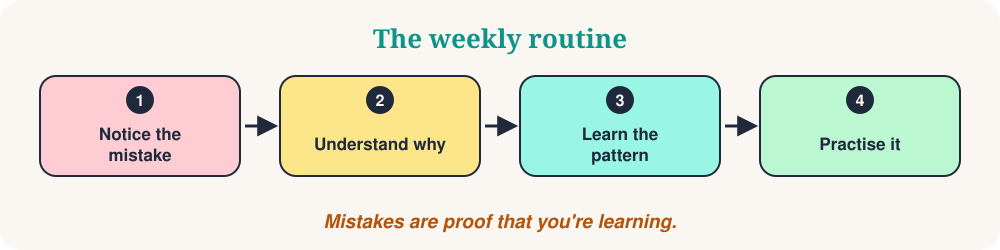

Welcome to Saturday Mistakes. Every week we look at five small mistakes that learners make, understand why they happen, and replace them with a pattern that sounds natural. Mistakes are not a problem. They are proof that you are learning.
This week we look at five common mistakes in English. Every mistake follows the same steps: the sentence that is not quite right, the better sentence, the reason, a simple rule and a mini-quiz. Notice the pattern, not just the individual sentence.

Today's five mistakes
- Future forms
- Spend time
- Double negatives
- Verbs + prepositions
- Preposition combinations
Future forms
“I will be go to the party tomorrow.”
“I will go to the party tomorrow.”
Why it happens. “Be” appears in many future sentences (“will be happy”, “will be working”), so learners add it everywhere.
The COSY rule. After will, use the base verb: will + go. Use will be + verb-ing only for an action in progress at a future time.
- I will work tomorrow.
- I will be working at 9 a.m.
- She will be happy.
❓ Which sentence is correct?
After “will” we use the base verb: I will visit.
Spend time
“I spent time for learning English.”
“I spent time learning English.”
Why it happens. Many languages use a word like “for” or “to” here, so learners translate it directly.
The COSY rule. Use spend time + verb-ing. Use “to + verb” to give a purpose: I study to improve my English.
- I spent an hour practising English.
- She spends time reading.
- I study to improve my English.
❓ I spend 30 minutes ___ before bed.
“Spend time” is followed by the -ing form: reading.
Double negatives
“I don’t know nothing about it.”
“I don’t know anything about it.” / “I know nothing about it.”
Why it happens. In Spanish, Italian, French, Russian, Greek and many other languages, the negative is repeated (“no sé nada”). In standard English, one negative is enough.
The COSY rule. Choose one negative pattern: no + noun or don’t/doesn’t + verb + any(thing).
- There is no milk.
- There isn’t any milk.
- I have no questions.
❓ I checked my bag, but…
With “don’t” we use “anything”. Or say it with one negative word: “I have nothing.”
Verbs + prepositions
“We discussed about the problem.”
“We discussed the problem.”
Why it happens. “Discuss” already means “talk about”, so “about” is extra. Other verbs need a small word: arrive at, listen to.
The COSY rule. Learn verbs with their pattern: discuss something, listen to something, arrive at the station.
- I listened to music.
- We arrived at the station.
- She reached the station.
❓ Choose the correct sentence.
“Discuss” has no preposition. “Listen” needs “to”: We listened to it.
Preposition combinations
“It depends of you.”
“It depends on you.”
Why it happens. Prepositions rarely translate word for word. The same idea uses different small words in different languages.
The COSY rule. Learn the whole expression: depend on, interested in, good at, afraid of, wait for.
- I’m interested in music.
- She’s good at maths.
- Wait for the bus.
❓ I’m interested ___ learning French.
We say “interested in”.
Your 10-minute practice
- Choose two mistakes that you sometimes make.
- Write three new sentences for each one, using the rule.
- Say them aloud and record yourself.
- Compare your sentences with the examples above.
- Next week, listen for the same patterns in real conversations.
The COSY takeaway
Notice the pattern. Practise the pattern. Make it your own. Which answer surprised you most? Write it down and use it in a sentence today.
“Mistakes are part of learning.”
📚 Further reading
The ideas in this article rest on published research and teaching practice. Start with any of these:
- Corder, S. P. (1967). The significance of learners' errors. International Review of Applied Linguistics, 5(4), 161–170.
- Hattie, J., & Timperley, H. (2007). The power of feedback. Review of Educational Research, 77(1), 81–112.
- James, C. (1998). Errors in Language Learning and Use: Exploring Error Analysis. Longman.
- Lyster, R., & Ranta, L. (1997). Corrective feedback and learner uptake: Negotiation of form in communicative classrooms. Studies in Second Language Acquisition, 19(1), 37–66.
- Roediger, H. L., & Karpicke, J. D. (2006). Test-enhanced learning: Taking memory tests improves long-term retention. Psychological Science, 17(3), 249–255.